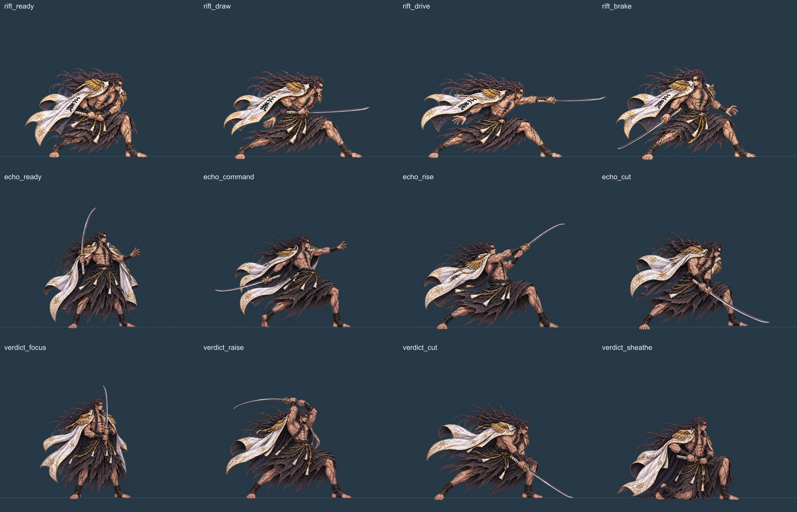

하쿠야 신 · 흑백 검기
먹빛 검기와 은백색 칼바람이 어깨와 몸 양옆까지 넓게 감쌉니다. 등 뒤의 두 흐름은 몸 중심을 기준으로 균형을 이루고, 앞쪽 검기는 허리와 발목을 휘감습니다.
영상을 불러오는 중입니다.
일반광역
흑백 검기 · 좌우의 검기가 중심을 맞춰 어깨와 몸 전체를 넓게 감쌉니다.
흑백 검기 원본과 검수 기록
이전 검술과 제작 영상
흑금 단공 · 잔영 삼재 · 천형 종결
빠르게 지나가는 발도, 세 방향의 잔영 협공, 검흔을 쌓아 종결하는 대형기. 새 자세 12개와 기술별 검흔 작화를 기존 V3 전장에 연결했습니다.
영상 1배속 · 한 영상씩 재생
01 · 흑금 단공
낮게 모은 자세에서 적을 관통합니다. 지나간 자리에 먹빛 검흔과 금백색 날이 남고, 뒤돌아 제동합니다.
효과 OFF · 몸동작 비교
02 · 잔영 삼재
지휘하는 본체 주변으로 잔영이 좌측·우측·상단에서 베어 들어옵니다. 서로 다른 각도의 검광을 세운 뒤 본체의 내려베기로 닫습니다.
효과 OFF · 몸동작 비교
03 · 천형 종결
준비 컷인 이후 세 방향의 검흔을 쌓습니다. 양손 내려베기와 함께 중심을 파열시키고 지면 충격과 파편으로 마무리합니다.
효과 OFF · 몸동작 비교
실제 전투를 0.5배속으로 재생한 세 기술
위 영상은 V3 전투 시계 자체를 0.5배로 재생한 기록입니다. 상단 영상 배속을 더 낮추면 이 영상도 한 번 더 느려집니다.
각 기술은 정상 전투 속도에서 효과 ON/OFF를 3회씩 재생했습니다. 참고 영상은 던파TV의 진(眞) 검귀를 0.5배속으로 재생하고 구간별 프레임을 확인했습니다. 현재 결과는 로컬 제작·검수본입니다.
새 자세 12개

Spine 편집 원본 · 세 기술 제작 기록
이전 회전·도약 연격과 검격 영상
회전·도약 연격 · 효과 ON
몸동작 비교 · 효과 OFF
정상 전투 속도로 연격을 3회씩 재생했습니다. 전장에서는 회전·도약 연격 버튼으로 직접 실행할 수 있습니다.
이전 기본 공격·발도 영상 · 새 액션 제작 기록
자세와 검격이 바뀌는 여섯 순간

새 작화와 Spine 원본
새 자세 8개를 추가한 로컬 검토용 리소스입니다.
Spine 편집 원본 다운로드